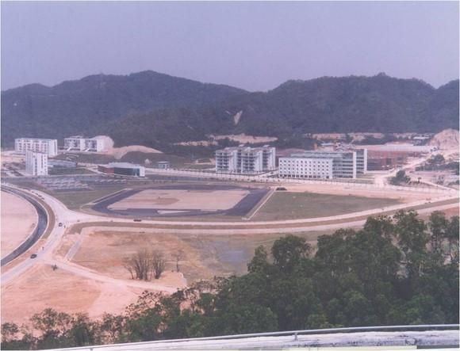
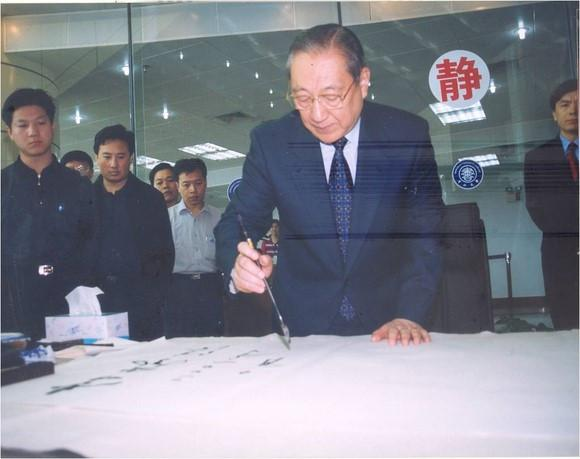

珠海做了8年的大学梦。
1992年，珠海在全国率先实行百万元重奖科技人才，为吸引科技人才起到了立竿见影的效果，此后的3年内，2．3万名科技人员、800多名海外留学人员纷纷到珠海工作。
但这并不是“治本”的办法。
珠海要想保持经济发展的后劲，保持高科技产业发展的后劲，需要自己源源不断地培养人才。珠海没有大学，聚不起科技人气，没有自己的人才培养基地，就不能保证科技人才的“源头活水”。
珠海人看到：全国50强城市，除珠海外，都有自己的大学；全国5个经济特区，除珠海外，都有自己的大学。
珠海人不甘心这个“除外”，1992年起，珠海开始筹办“珠海大学”，把“珠海大学”的筹建列为“八五”计划的重点项目之一。
筹建“珠大”的土地划出来了，请一位法国设计师设计好了“珠大”校园，一座高13层、建筑面积36000平方米的图书馆建起来了。为“珠大”建好的地面建筑投资达2．7亿元。

但是，8年了，没有听到“珠大”的开学铃声。
为什么？珠海市副市长余荣霭说：“办大学，我们的经验不足。包括大学的运作、管理，我们不太懂。如果引进一批教授、讲师、校长来创办名校的话，最少需要50年时间。最关键的办学经验是没法引进的，国内国外的名校都有几十年上百年的历史。所以，我们觉得自己办大学，财力、人力、经验都不足。”
更重要的是，有一位人物说过：“只要我在任一天，我就不同意批准珠海大学！”正是这位人物，改变了珠海高等教育的发展轨迹。

与此同时，坐落在广州市的中山大学（原名广东大学），由孙中山先生于1924年创办，1926年为纪念孙中山先生，改名为中山大学。
中大是全国重点大学之一，经过70多年的积淀，具有深厚的学术传统，雄厚的师资力量，丰富的教学经验，它是雄踞岭南的学术重镇。
而那两年，全国高校都在扩大招生规模，中大便遇到了一个大问题：中大校园太窄狭，扩招没有空间。
中山大学校长黄达人向记者介绍中大广州校区的情况。1.17平方公里的空间，去年在校生达到2万余人，教职工4000人。按广东省的教育规划，到2005年，中大研究生与本科生的比例应是4∶6。每年招收3300名本科新生，4年后全校本科生为13200人，在校研究生8800人。到2015年，研究生与本科生的比例应是6∶4，研究生增多，应用性学科的发展，需要更大规模的实验室。这1.17平方公里的空间无论如何是容纳不下了。
此时的中大校园古木参天，浓荫匝地。一座小楼伴着一片翠绿，清幽秀雅。这样的小楼共有44座，差不多都有近百年的历史，都是文物，总不能毁掉古树、小楼、绿地去建教学大楼、学生宿舍吧。况且，这44座小楼一座也不能动，有文物保护法保护着哩！向四周扩展吗？四周都是马路、街道，一步也挪不动。
中大要扩张，只有一条路：异地办学。到广州市外，另觅一块宝地，建一个新校区。